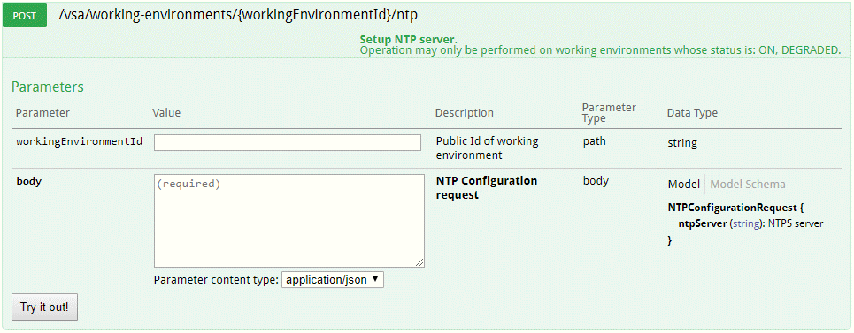
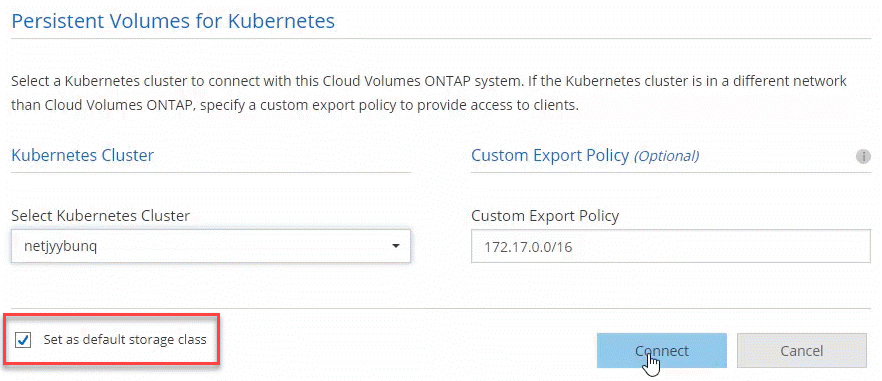

Demander de modifier un document
Demander de modifier un document Modifier sur GitHub
Modifier sur GitHub Guide des contributeurs
Guide des contributeursConsultez les documents sur la dernière version.
Nouveautés de Cloud Manager 3.6
Contributeurs
OnCOMMAND Cloud Manager introduit généralement une nouvelle version chaque mois pour vous apporter de nouvelles fonctionnalités, améliorations et corrections de bogues.

|
Vous recherchez une version précédente ?"Nouveautés de la version 3.5" "Nouveautés de la version 3.4" |
Prise en charge de l’environnement AWS C2S (2 mai 2019)
Cloud Volumes ONTAP 9.5 et Cloud Manager 3.6.4 sont désormais disponibles pour les États-Unis Intelligence Community (IC) via l’environnement AWS commercial Cloud Services (C2S). Vous pouvez déployer des paires HA et des systèmes à un seul nœud dans C2S.
Cloud Manager 3.6.6 (1er mai 2019)
-
for 6 TB disks in AWS
-
for new disk sizes with single node systems in Azure
-
for Standard SSDs with single node systems in Azure
-
discovery of Kubernetes clusters created with the NetApp Kubernetes Service
-
to configure an NTP server
Prise en charge des disques de 6 To dans AWS
Vous pouvez désormais choisir une taille de disque EBS de 6 To avec Cloud Volumes ONTAP pour AWS. Avec le récent "Performance accrue des SSD polyvalents", Un disque de 6 To est désormais le meilleur choix pour des performances maximales.
Cette modification est prise en charge par Cloud Volumes ONTAP 9.5, 9.4 et 9.3.
Prise en charge de nouvelles tailles de disques avec des systèmes à un seul nœud dans Azure
Vous pouvez désormais utiliser des disques de 8 To, 16 To et 32 To avec des systèmes à un seul nœud dans Azure. Grâce aux capacités de disque améliorées, vous pouvez atteindre jusqu’à 368 To de capacité système sur des disques seuls, en cas d’utilisation des licences Premium ou BYOL.
Cette modification est prise en charge par Cloud Volumes ONTAP 9.5, 9.4 et 9.3.
Prise en charge des SSD standard avec des systèmes à un seul nœud dans Azure
Les disques gérés SSD standard sont désormais pris en charge par les systèmes à un seul nœud dans Azure. Ces disques offrent un niveau de performances entre les SSD Premium et les disques HDD standard.
Cette modification est prise en charge par Cloud Volumes ONTAP 9.5, 9.4 et 9.3.
Découverte automatique des clusters Kubernetes créés avec NetApp Kubernetes Service
Cloud Manager peut désormais détecter automatiquement les clusters Kubernetes que vous déployez à l’aide de NetApp Kubernetes Service. Cela vous permet de connecter les clusters Kubernetes à vos systèmes Cloud Volumes ONTAP, de sorte que vous puissiez les utiliser comme stockage persistant pour vos conteneurs.
L’image suivante montre un cluster Kubernetes détecté automatiquement. Le lien « Go to NKS » vous amène directement au service NetApp Kubernetes.

Possibilité de configurer un serveur NTP
Vous pouvez désormais configurer Cloud Volumes ONTAP de manière à utiliser un serveur NTP (Network Time Protocol). La spécification d’un serveur NTP synchronise l’heure entre les systèmes de votre réseau, ce qui peut aider à éviter les problèmes dus aux différences de temps.
Spécifiez un serveur NTP via l’API Cloud Manager ou depuis l’interface utilisateur lors de la configuration d’un serveur CIFS :
-
Le "API Cloud Manager" Vous permet de spécifier n’importe quelle adresse pour le serveur NTP. Voici l’API d’un système à un seul nœud dans AWS :

-
Lors de la configuration d’un serveur CIFS, l’interface utilisateur de Cloud Manager vous permet de spécifier un serveur NTP qui utilise le domaine Active Directory. Si vous devez utiliser une autre adresse, vous devez utiliser l’API.
L’image suivante montre le champ serveur NTP, qui est disponible lors de la configuration de CIFS.

Cloud Manager 3.6.5 (2 avril 2019)
Cloud Manager 3.6.5 comprend plusieurs améliorations :
-
enhancements
-
Support Site accounts are now managed at the system level
-
transit gateways can enable access to floating IP addresses
-
resource groups are now locked
-
4 and NFS 4.1 are now enabled by default
-
new API enables you to delete ONTAP Snapshot copies
Améliorations de Kubernetes
Nous avons apporté quelques améliorations qui vous permettent d’utiliser Cloud Volumes ONTAP en tant que stockage persistant pour les conteneurs :
-
Vous pouvez à présent ajouter plusieurs clusters Kubernetes à Cloud Manager.
Cela vous permet de connecter différents clusters à différents systèmes Cloud Volumes ONTAP et à plusieurs clusters sur le même système Cloud Volumes ONTAP.
-
Lorsque vous connectez un cluster, vous pouvez désormais définir Cloud Volumes ONTAP comme classe de stockage par défaut pour le cluster Kubernetes.
Lorsqu’un utilisateur crée un volume persistant, le cluster Kubernetes peut utiliser Cloud Volumes ONTAP comme stockage back-end par défaut :

-
Nous avons modifié la façon dont Cloud Manager nomme les classes de stockage Kubernetes pour les identifier plus facilement :
-
netapp-fichier : pour lier un volume persistant à un système Cloud Volumes ONTAP à un seul nœud
-
NetApp-file-redondant : pour relier un volume persistant à une paire HA Cloud Volumes ONTAP
-
-
La version de NetApp Trident que Cloud Manager installe a été mise à jour vers la dernière version.
Les comptes du site de support NetApp sont désormais gérés au niveau du système
La gestion des comptes du site de support NetApp dans Cloud Manager est désormais plus simple.
Dans les versions précédentes, vous aviez besoin de lier un compte sur le site de support NetApp à un locataire spécifique. Les comptes sont désormais gérés au niveau du système Cloud Manager, au même endroit que vous gérez les comptes des fournisseurs cloud. Vous pouvez choisir entre plusieurs comptes du site de support NetApp lors de l’enregistrement de vos systèmes Cloud Volumes ONTAP.

Lorsque vous créez un nouvel environnement de travail, il vous suffit de sélectionner le compte du site de support NetApp pour enregistrer le système Cloud Volumes ONTAP avec :

Lorsque Cloud Manager est mis à jour vers 3.6.5, il ajoute automatiquement des comptes sur le site de support NetApp si vous aviez déjà associé des locataires avec un compte.
Les passerelles de transport AWS peuvent permettre l’accès aux adresses IP flottantes
Une paire haute disponibilité dans plusieurs zones de disponibilité AWS utilise des adresses IP flottantes pour l’accès aux données NAS et pour les interfaces de gestion. Jusqu’à présent, ces adresses IP flottantes n’étaient pas accessibles en dehors du VPC où réside la paire haute disponibilité.
Nous avons vérifié que vous pouvez utiliser un "Passerelle de transit AWS" Pour permettre l’accès aux adresses IP flottantes depuis l’extérieur du VPC. Cela signifie que les outils de gestion NetApp et les clients NAS qui se trouvent en dehors du VPC peuvent accéder aux adresses IP flottantes et tirer parti du basculement automatique.
Les groupes de ressources Azure sont maintenant verrouillés
Cloud Manager verrouille désormais les groupes de ressources Cloud Volumes ONTAP dans Azure lors de leur création. Le verrouillage des groupes de ressources empêche les utilisateurs de supprimer ou de modifier accidentellement des ressources critiques.
NFS 4 et NFS 4.1 sont désormais activés par défaut
Cloud Manager active désormais les protocoles NFS 4 et NFS 4.1 sur chaque nouveau système Cloud Volumes ONTAP créé. Cette modification vous fait gagner du temps car vous n’avez plus besoin d’activer ces protocoles vous-même manuellement.
Une nouvelle API vous permet de supprimer les copies Snapshot ONTAP
Vous pouvez désormais supprimer des copies Snapshot de volumes en lecture/écriture via un appel d’API Cloud Manager.
Voici un exemple de l’appel d’API pour un système HA dans AWS :

Des appels d’API similaires sont disponibles pour les systèmes à un seul nœud dans AWS, et pour les systèmes à un seul nœud et HA dans Azure.
Mise à jour de Cloud Manager 3.6.4 (18 mars 2019)
Cloud Manager a été mis à jour pour prendre en charge la version 9.5 de correctif P1 pour Cloud Volumes ONTAP. Avec cette version de correctif, les paires haute disponibilité dans Azure sont maintenant généralement disponibles (GA).
Voir la "Notes de version de Cloud Volumes ONTAP 9.5" Pour plus d’informations, notamment sur la prise en charge des paires haute disponibilité dans la région Azure.
Cloud Manager 3.6.4 (3 mars 2019)
Cloud Manager 3.6.4 comprend plusieurs améliorations :
-
encryption with a key from another account
-
of failed disks
-
storage accounts enabled for HTTPS when data tiering to Blob containers
Chiffrement géré par AWS avec une clé d’un autre compte
Lorsque vous lancez un système Cloud Volumes ONTAP dans AWS, vous pouvez maintenant activer "Chiffrement géré par AWS" Utilisation d’une clé maître client (CMK) d’un autre compte utilisateur AWS.
Les images suivantes montrent comment sélectionner l’option lors de la création d’un nouvel environnement de travail :

Restauration des disques défaillants
Cloud Manager tente désormais de récupérer les disques défectueux à partir des systèmes Cloud Volumes ONTAP. Les tentatives réussies sont indiquées dans les rapports de notification par e-mail. Voici un exemple de notification :

|
|
Vous pouvez activer les rapports de notification en modifiant votre compte utilisateur. |
Les comptes de stockage Azure sont activés pour HTTPS lors du Tiering des données dans les conteneurs de objets blob
Lorsque vous configurez un système Cloud Volumes ONTAP pour hiérarchiser les données inactives vers un conteneur Azure Blob, Cloud Manager crée un compte de stockage Azure pour ce conteneur. À partir de cette version, Cloud Manager permet désormais la création de nouveaux comptes de stockage avec transfert sécurisé (HTTPS). Les comptes de stockage existants continuent d’utiliser HTTP.
Cloud Manager 3.6.3 (4 février 2019)
Cloud Manager 3.6.3 comprend plusieurs améliorations :
-
for Cloud Volumes ONTAP 9.5 GA
-
TB capacity limit for all Premium and BYOL configurations
-
for new AWS regions
-
for S3 Intelligent-Tiering
-
to disable data tiering on the initial aggregate
-
EC2 instance type now t3.medium for Cloud Manager
-
of scheduled shutdowns during data transfers
Prise en charge de Cloud Volumes ONTAP 9.5 GA
Cloud Manager prend désormais en charge la version GA d’Cloud Volumes ONTAP 9.5, dont la disponibilité générale est désormais prise en charge. Notamment la prise en charge des instances M5 et R5 dans AWS. Pour plus d’informations sur la version 9.5, consultez le "Notes de version de Cloud Volumes ONTAP 9.5".
Limite de capacité de 368 To pour toutes les configurations Premium et BYOL
La limite de capacité système pour Cloud Volumes ONTAP Premium et BYOL est désormais de 368 To sur toutes les configurations : un seul nœud et une haute disponibilité, à la fois sur AWS et Azure. Cette modification s’applique à Cloud Volumes ONTAP 9.5, 9.4 et 9.3 (AWS uniquement avec 9.3).
Pour certaines configurations, les limites de disque vous empêchent d’atteindre la limite de capacité de 368 To en utilisant uniquement des disques. Dans ce cas, vous pouvez atteindre la limite de capacité de 368 To de "tiering des données inactives vers le stockage objet". Par exemple, un système à un seul nœud dans Azure peut disposer d’une capacité sur disque de 252 To, ce qui permet d’atteindre jusqu’à 116 To de données inactives dans le stockage Azure Blob.
Pour plus d’informations sur les limites de disque, reportez-vous à la section limites de stockage dans le "Notes de version de Cloud Volumes ONTAP".
Prise en charge des nouvelles régions AWS
Cloud Manager et Cloud Volumes ONTAP sont désormais pris en charge dans les régions AWS suivantes :
-
Europe (Stockholm)
Systèmes à un seul nœud uniquement. Les paires HAUTE DISPONIBILITÉ ne sont pas prises en charge pour le moment.
-
GovCloud (USA-est)
Cette fonctionnalité vient en outre du support pour la région AWS GovCloud (USA-West).
Prise en charge du Tiering intelligent S3
Lorsque vous activez le Tiering des données dans AWS, Cloud Volumes ONTAP transfère par défaut les données inactives vers la classe de stockage S3 Standard. Vous pouvez désormais modifier le niveau de hiérarchisation en classe de stockage Intelligent Tiering. Cette classe de stockage optimise les coûts de stockage en déplaçant les données entre deux niveaux au fur et à mesure de l’évolution des modèles d’accès aux données. L’un des niveaux est destiné aux accès fréquents et l’autre à des accès rares.
Tout comme dans les versions précédentes, vous pouvez également utiliser le niveau Standard-Infrequent Access et le niveau One zone-Infrequent Access.
Possibilité de désactiver le Tiering des données sur l’agrégat initial
Dans les versions précédentes, Cloud Manager avait automatiquement activé le Tiering des données sur l’agrégat Cloud Volumes ONTAP initial. Vous pouvez désormais choisir de désactiver le Tiering des données sur cet agrégat initial. (Vous pouvez également activer ou désactiver le Tiering des données sur les agrégats suivants.)
Cette nouvelle option est disponible lors du choix des ressources de stockage sous-jacentes. L’image suivante montre un exemple lors du lancement d’un système dans AWS :

Type d’instance EC2 recommandé maintenant t3.medium pour Cloud Manager
Le type d’instance de Cloud Manager est désormais t3.medium lors du déploiement de Cloud Manager dans AWS à partir de NetApp Cloud Central. Il s’agit également du type d’instance recommandé dans AWS Marketplace. Cette modification permet la prise en charge dans les dernières régions AWS et réduit les coûts d’instance. Le type d’instance recommandé était auparavant t2.medium, qui est toujours pris en charge.
Report des arrêts programmés pendant les transferts de données
Si vous avez planifié un arrêt automatique de votre système Cloud Volumes ONTAP, Cloud Manager reporte à l’arrêt automatique du système si un transfert de données actif est en cours. Cloud Manager arrête le système une fois le transfert terminé.
Cloud Manager 3.6.2 (2 janvier 2019)
Cloud Manager 3.6.2 inclut de nouvelles fonctionnalités et améliorations.
-
spread placement group for Cloud Volumes ONTAP HA in a single AZ
-
protection
-
data replication policies
-
access control for Kubernetes
AWS répartit le groupe de placement pour Cloud Volumes ONTAP HA en une seule zone de disponibilité
Lorsque vous déployez Cloud Volumes ONTAP HA dans une seule zone de disponibilité AWS, Cloud Manager crée désormais un "Groupe de placement AWS réparti" Et lance les deux nœuds haute disponibilité de ce groupe de placement. Le groupe de placement réduit le risque de défaillances simultanées en répartissant les instances sur un matériel sous-jacent distinct.

|
Cette fonctionnalité améliore la redondance en termes de calcul, et non en termes de défaillance des disques. |
Cloud Manager requiert de nouvelles autorisations pour cette fonctionnalité. Assurez-vous que la politique IAM qui fournit les autorisations à Cloud Manager inclut les actions suivantes :
"ec2:CreatePlacementGroup",
"ec2:DeletePlacementGroup"Vous trouverez la liste complète des autorisations requises dans le "Dernières règles AWS pour Cloud Manager".
Protection par ransomware
Les attaques par ransomware peuvent coûter du temps, des ressources et de la réputation à l’entreprise. Cloud Manager vous permet désormais d’implémenter la solution NetApp contre les attaques par ransomware qui fournit des outils efficaces pour la visibilité, la détection et la résolution de problèmes.
-
Cloud Manager identifie les volumes qui ne sont pas protégés par une règle Snapshot et vous permet d’activer la règle Snapshot par défaut sur ces volumes.
Les copies Snapshot sont en lecture seule, ce qui empêche la corruption par ransomware. Ils peuvent également assurer la granularité pour créer des images d’une copie de fichiers unique ou d’une solution complète de reprise après incident.
-
Cloud Manager vous permet également de bloquer les extensions de fichiers ransomware courantes en activant la solution FPolicy d’ONTAP.

Nouvelles règles de réplication des données
Cloud Manager inclut cinq nouvelles règles de réplication des données que vous pouvez utiliser pour la protection des données.
Trois stratégies configurent la reprise après incident et la conservation à long terme des sauvegardes sur le même volume de destination. Chaque règle offre une période de conservation différente :
-
Miroir et sauvegarde (durée de conservation de 7 ans)
-
Mise en miroir et sauvegarde (conservation sur 7 ans avec davantage de sauvegardes hebdomadaires)
-
Miroir et sauvegarde (conservation mensuelle d’un an)
Les règles restantes offrent davantage d’options pour la conservation à long terme des sauvegardes :
-
Sauvegarde (conservation d’un mois)
-
Sauvegarde (conservation d’une semaine)
Il vous suffit de glisser-déposer un environnement de travail pour sélectionner l’une des nouvelles stratégies.
Contrôle d’accès de volume pour Kubernetes
Vous pouvez maintenant configurer l’export policy pour les volumes persistants Kubernetes. La export policy peut activer l’accès aux clients si le cluster Kubernetes se trouve dans un réseau différent de celui du système Cloud Volumes ONTAP.
Vous pouvez configurer l’export policy lorsque vous connectez un environnement de travail à un cluster Kubernetes et en modifiant un volume existant.
Cloud Manager 3.6.1 (4 décembre 2018)
Cloud Manager 3.6.1 inclut de nouvelles fonctionnalités et améliorations.
-
for Cloud Volumes ONTAP 9.5 in Azure
-
Provider Accounts
-
to the AWS Cost report
-
for new Azure regions
Prise en charge d’Cloud Volumes ONTAP 9.5 dans Azure
Cloud Manager prend désormais en charge Cloud Volumes ONTAP 9.5 dans Microsoft Azure, avec un aperçu des paires haute disponibilité. Vous pouvez demander une licence de présentation pour une paire Azure HA en nous contactant à l’adresse ng-Cloud-Volume-ONTAP-preview@netapp.com.
Pour plus d’informations sur la version 9.5, consultez le "Notes de version de Cloud Volumes ONTAP 9.5".
Nouvelles autorisations Azure requises pour Cloud Volumes ONTAP 9.5
Cloud Manager requiert de nouvelles autorisations Azure pour ses principales fonctionnalités de la version Cloud Volumes ONTAP 9.5. Pour vous assurer que Cloud Manager peut déployer et gérer les systèmes Cloud Volumes ONTAP 9.5, il est conseillé de mettre à jour votre politique Cloud Manager en ajoutant les autorisations suivantes :
"Microsoft.Network/loadBalancers/read",
"Microsoft.Network/loadBalancers/write",
"Microsoft.Network/loadBalancers/delete",
"Microsoft.Network/loadBalancers/backendAddressPools/read",
"Microsoft.Network/loadBalancers/backendAddressPools/join/action",
"Microsoft.Network/loadBalancers/frontendIPConfigurations/read",
"Microsoft.Network/loadBalancers/loadBalancingRules/read",
"Microsoft.Network/loadBalancers/probes/read",
"Microsoft.Network/loadBalancers/probes/join/action",
"Microsoft.Network/routeTables/join/action"
"Microsoft.Authorization/roleDefinitions/write",
"Microsoft.Authorization/roleAssignments/write",
"Microsoft.Web/sites/*"
"Microsoft.Storage/storageAccounts/delete",
"Microsoft.Storage/usages/read",Vous trouverez la liste complète des autorisations requises dans le "Dernières règles Azure pour Cloud Manager".
Comptes fournisseurs cloud
Il est désormais plus simple de gérer plusieurs comptes AWS et Azure dans Cloud Manager via Cloud Provider Accounts.
Dans les versions précédentes, vous aviez besoin de spécifier les autorisations de fournisseur de cloud pour chaque compte utilisateur Cloud Manager. Les autorisations sont désormais gérées au niveau du système Cloud Manager à l’aide de Cloud Provider Accounts.

Lorsque vous créez un nouvel environnement de travail, il vous suffit de sélectionner le compte dans lequel vous voulez déployer le système Cloud Volumes ONTAP :

Lorsque vous passez à la version 3.6.1, Cloud Manager crée automatiquement des comptes fournisseurs de services cloud pour vous, en fonction de votre configuration actuelle. Si vous avez des scripts, la rétrocompatibilité est en place, aucune interruption.
Améliorations apportées au rapport sur les coûts AWS
Le rapport sur les coûts d’AWS fournit maintenant plus d’informations et est plus facile à configurer.
-
Ce rapport identifie les coûts mensuels associés aux ressources en cours d’exécution de Cloud Volumes ONTAP dans AWS. Vous pouvez afficher les coûts mensuels pour le calcul, le stockage EBS (y compris les snapshots EBS), le stockage S3 et le transfert des données.
-
Le rapport présente les économies réalisables avec le Tiering des données inactives vers S3.
-
Nous avons également simplifié la façon dont Cloud Manager obtient les données de coût sur AWS.
Cloud Manager n’a plus besoin d’accéder aux rapports de facturation que vous stockez dans un compartiment S3. Cloud Manager utilise plutôt l’API de l’explorateur de coûts. Il vous suffit de vous assurer que la politique IAM qui fournit les autorisations à Cloud Manager inclut les actions suivantes :
"ce:GetReservationUtilization", "ce:GetDimensionValues", "ce:GetCostAndUsage", "ce:GetTags"Ces actions sont incluses dans la dernière "Politique fournie par NetApp". Les nouveaux systèmes déployés à partir de NetApp Cloud Central incluent automatiquement ces autorisations.

Prise en charge des nouvelles régions Azure
Vous pouvez désormais déployer Cloud Manager et Cloud Volumes ONTAP dans la région France Central.
Cloud Manager 3.6 (4 novembre 2018)
Cloud Manager 3.6 inclut une nouvelle fonctionnalité.
Utilisation de Cloud Volumes ONTAP en tant que stockage persistant pour un cluster Kubernetes
Cloud Manager peut désormais automatiser le déploiement de "NetApp Trident" Sur un seul cluster Kubernetes, vous pouvez utiliser Cloud Volumes ONTAP comme stockage persistant pour les conteneurs. Les utilisateurs peuvent ensuite demander et gérer des volumes persistants à l’aide d’interfaces et de constructions natives Kubernetes, tout en tirant parti des fonctionnalités avancées de gestion des données d’ONTAP, sans en connaître l’existence.